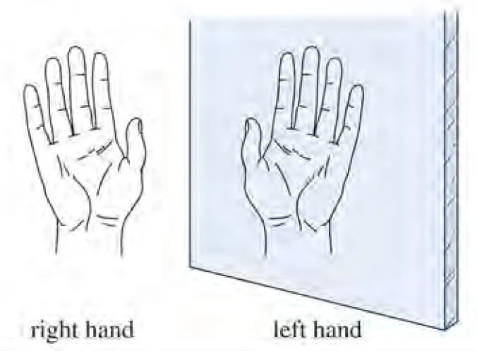
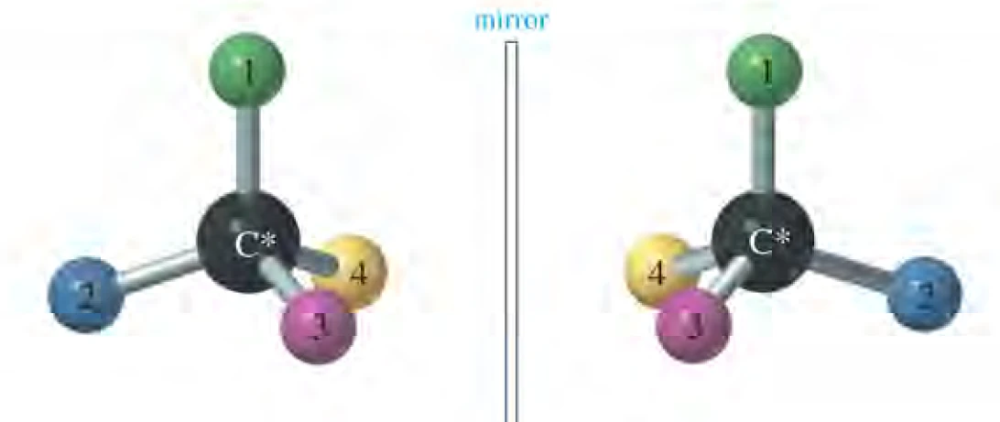
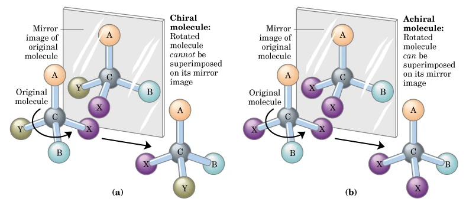
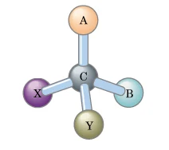
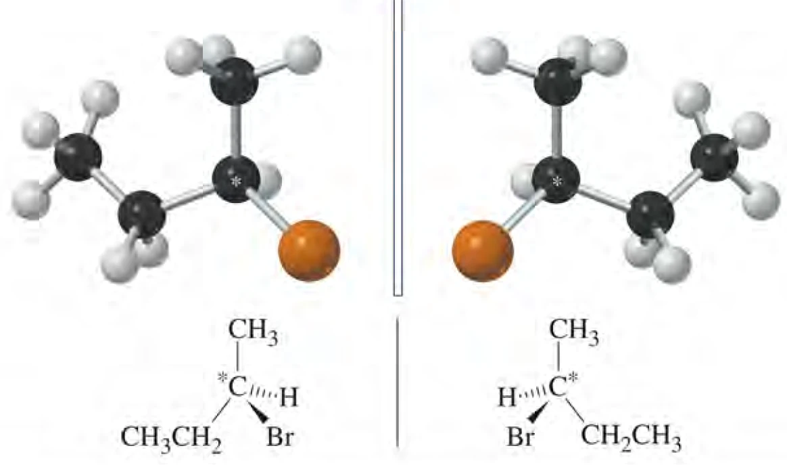
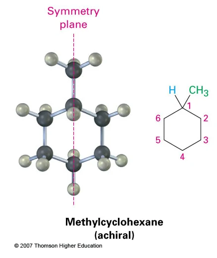
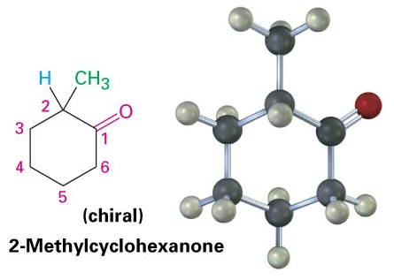
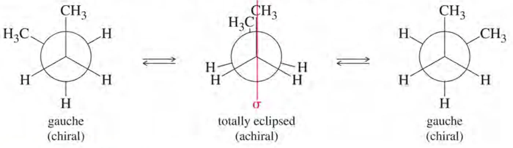
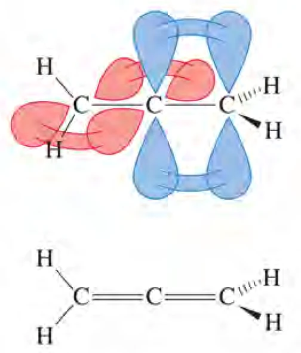
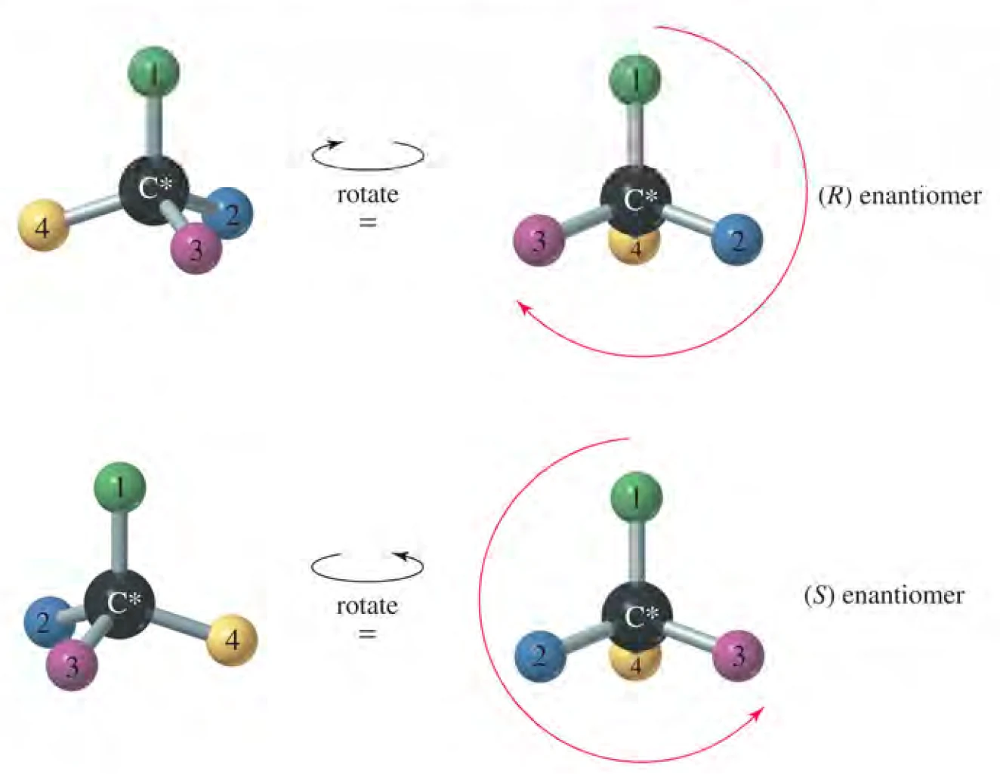

连有四个不同取代基的碳原子。这是最直观、最容易上手的判据，但只是一个充分条件式的起点。
LECTURE 07 · CHAPTER 5-1
立体化学：手性、对映体与 R/S 构型
Stereochemistry: chirality, enantiomers, and the R/S configuration
课件原图手性判定流程CIP 顺序规则课件勘误提示
1. 从平面结构式到三维结构
前几课讨论的结构式都是平面写法，但碳的四个键在空间里指向四面体的四个顶点。两个分子可以有完全相同的连接顺序、完全相同的官能团，却因为原子在空间中的排布不同而成为不同的化合物——它们甚至可能有截然相反的生物活性。立体化学（stereochemistry）就是研究分子三维结构的学科。
课件用两个对比鲜明的例子说明“空间排布不是细节”。丁烯二酸 HOOC–CH=CH–COOH 有两种几何形式：反式的富马酸（fumaric acid，反丁烯二酸）是动植物体内必需的代谢中间体；顺式的马来酸（maleic acid，顺丁烯二酸）却对组织有刺激毒害作用。两者的分子式与连接顺序完全一致，差别只在两个羧基位于双键的同侧还是异侧。
更沉重的是沙利度胺（thalidomide，反应停）。它作为手性化合物，R-构型具有抑制妊娠反应的活性，S-构型却有致畸性。二十世纪五十年代末起，该药陆续进入欧洲、日本、澳大利亚、非洲和拉丁美洲市场，到六十年代初已使 46 个国家超过一万名新生儿出现畸形，例如海豹肢症（phocomelia）。澳大利亚产科医生 William McBride 与德国儿科医生 Widukind Lenz 怀疑婴儿致畸与该药有关，1961 年由 Lenz 证实；美国 FDA 的 Frances Oldham Kelsey 则因要求补充药理研究而拒绝了上市申请。这是药物史上最著名的案例之一，成名的原因不是疗效，而是毒性。
为什么“只卖有效的那一种”也救不了
课件给出了这个案例最关键的一层：R-构型与S-构型在体内会互相转化（消旋化）。无论服用哪一种光学纯化合物，在血清中都发现是消旋的。因此即使只给患者有效的R-构型，也无法保证没有毒性。手性药物的安全不能只靠“分离出单一对映体”来解决，还要处理体内消旋、代谢与转运带来的问题。
针对这一问题，课件列出了三条现代解决路径：不对称合成（asymmetric synthesis）、生物催化过程（biocatalytic process）与手性拆分（chiral resolution）。它们分别从“直接造出想要的那一种”“借用酶的选择性”和“造完再分开”三个角度入手。
2. 异构体的分类地图
立体化学的讨论对象是异构体中的一支。课件先给出一张完整的分类地图，把“连接方式不同”和“连接方式相同而空间取向不同”彻底分开。
DIFFER IN BONDING SEQUENCE
构造异构体 · constitutional isomer（亦称 structural isomer）
- 碳架异构体 carbon skeleton isomer：碳骨架的分支方式不同
- 位置异构体 position isomer：官能团或取代基位置不同
- 官能团异构体 functional group isomer：官能团种类不同
- 互变异构体 tautomeric isomer：伴随质子转移的快速互变
- 价键异构体 valence bond isomer：成键方式本身不同
这张图里最需要记住的分界是能否通过旋转互相转化。构象异构体之间只靠单键旋转就能互换，能量差小、室温下往往快速互相转化；构型异构体之间的转化必须断裂并重新形成化学键，因此可以把它们分别装进不同的瓶子里。上一课讨论的 Newman 投影与丁烷能量曲线属于构象问题，本课要处理的则是构型问题。
3. 手性与对映体
课件把手性称为“自然界的基本性质”。它的理论基础来自 1874 年 LeBel 与 van’t Hoff 提出的碳原子四面体结构——正因为碳的四个键指向四面体的四个顶点，四个不同的基团才可能有两种不同的空间排布。
判断两个物体是否“相同”，标准是能否完全重叠（superimposable）。手性（chirality）的定义就建立在这个操作上：一个物体如果有左手形式和右手形式，它就是手性的；手性物体具有与自身不同的镜像。反过来，如果镜像可以通过平移与旋转和原物完全重合，该物体就是非手性的（achiral）。

把这一判据用在分子上，就得到对映体（enantiomers）的定义：互为镜像但不能完全重叠的一对立体异构体。课件用两个动作概括了区分：把两个分子“平行移动—重叠”，能重合的就不是对映体；需要“旋转 180°—重叠”的，才是同一分子的不同取向。对映体之间的唯一差别是三维取向，因此它们所有非手性环境下的物理性质都相同——这正是分离它们如此困难的原因。


“重叠”是一个假想的操作
课件特别注明，完全重叠是一种想象中的检验，不涉及真实的物理过程。它是判定分子是否具有手性的定义性操作，而不是实验手段。实际实验判断依靠旋光性、手性色谱、NMR 手性位移试剂等方法。
4. 手性碳、手性中心与立体中心
在实际分子中寻找手性来源时，最常用的是不对称碳原子（asymmetric carbon atom），也称手性碳原子（chiral carbon atom）：连有四个不同取代基的碳原子，通常用星号（*）标出。2-溴丁烷就是最简单的例子之一，它的 C2 连有 Br、H、CH3 与 CH2CH3 四个不同基团。


课件接着区分了三个容易混用的术语，它们的严格程度依次放宽：
IUPAC 术语，指任何所连配体在空间中的排布不能与自身镜像重叠的原子。它不限于碳，也可以是 N、P、S 等。
只要交换该原子上的两个基团就能得到立体异构体，该原子即为立体中心。范围最宽，包含不产生手性的立体中心（如某些顺反异构中心）。
这三个概念是层层包含的关系：不对称碳 → 手性中心 → 立体中心，范围依次扩大。课件给出的三条经验规则把“有手性碳”和“分子有手性”之间的关系讲清楚了：
THREE RULES
- 没有手性碳原子的化合物，通常是非手性的。
- 只有一个手性碳原子的化合物，一定是手性的。
- 有一个以上手性碳原子的化合物，不一定是手性的——分子内可能同时存在对称因素把它抵消掉。
第一条规则里的“通常”很关键：本课后面会看到联苯、丙二烯、反式环辛烯等分子，它们完全没有手性碳原子，却仍然是手性的。也就是说，寻找手性碳是一个好用的起点，而不是唯一的判据；真正的判据始终是对称性。
5. 对称元素与手性
既然有手性碳的分子未必有手性，就需要一个更根本的判据。课件的做法是反过来找对称元素：分子只要具备某几种对称元素，就一定不是手性的。
分子内对称面 σ
能把分子切成互为实物与镜像两半的平面，称为分子的对称面（internal mirror plane），用希腊字母 σ 表示。如果分子右侧恰好是左侧的镜像，那么分子与它自己的镜像就是同一个分子。任何有对称面的分子都是非手性分子，即使它含有手性碳原子。

课件提醒“注意环状分子”。环系上的取代基很容易让人以为有手性，但对称面常常就在眼前：甲基环己烷看似有一个取代碳，却因为分子整体有对称面而非手性。作为对照，2-甲基环己酮的羰基打破了对称性，分子不再有对称面，因而是手性的。

对称中心 i
如果分子中存在一个点，所有通过这个点画出的直线都能以等距离到达相同的基团，该点称为对称中心（symmetric center），用 i 表示。一个分子最多只能有一个对称中心，与它对应的对称操作是“倒反”。具有对称中心的分子一定是非手性的。
反轴 Sn
分子绕某个轴旋转 2π/n 之后，再用垂直于该轴的平面进行一次反映，若所得结果与原来的分子重合，则该轴称为反轴（improper axis），记作 Sn，n 为它的级。反轴同时关联旋转与反映两种操作，具有反轴的分子不是手性分子。
反轴与前面的对称元素并不是彼此独立的。课件给出了两条对应关系：
S1 = σ（镜面对称） S2 = i（中心对称）
也就是说，有对称面的分子必然有一级反轴，有对称中心的分子必然有二级反轴。把这两种情形排除后，独立剩下的只有 S4。于是得到一条实用的经验判据：
手性的经验判据
如果一个分子既没有对称面、也没有对称中心、又没有 S4 反轴，那么它基本上就是手性分子。这条判据在考试和实际判断中比“数手性碳”可靠得多，因为它直接从对称性出发。
6. 构象可动体系的手性
单键可以自由旋转，分子因此不断在多个构象之间变化。这给手性判断带来一个特殊问题：分子在某个构象下看起来是手性的，在另一个构象下却可能是非手性的，那么它到底算不算手性？
课件用顺-1,2-二溴环己烷说明这一点。它的两种椅式构象互为镜像，并且能量完全相同，因此彼此之间快速互变。任何一份样品中都必然含有等量的两种镜像构象，分子整体不表现光学活性。分子的手性构象与其镜像处于平衡时，该分子不可能有光学活性，我们把它视为非手性分子。

由此得到判断构象可动分子是否具有光学活性的操作原则：
RULE OF THUMB
- 考察对称程度最大的那个构象。如果分子与某个非手性结构或构象处于平衡，它不可能有光学活性。
- 手性化合物没有可达到的非手性构象。换句话说，只有当分子在所有可达构象下都保持手性时，它才是真正的手性分子。
这条原则也解释了为什么不能对着一张构象图下结论。看到 gauche 丁烷的 Newman 投影时，它确实有手性轴般的外观，但丁烷整体是非手性的——因为它可以旋转到有对称面的对位交叉构象。判断时要问的是“它能不能转过去”，而不是“它现在长什么样”。
7. 构象对映异构：手性轴与手性面
有一类分子因为体积太大或张力太高，无法从一种手性构象转到它的镜像构象。这时两种构象就成了一对可以分离的对映体，称为构象对映异构现象。课件按手性来源把它们分成三类。
含手性轴：联苯型阻转异构体
联苯两个苯环之间的单键本应自由旋转，但当四个邻位都被足够大的基团占据时，旋转受阻，分子被“锁”在一种扭曲构象中，产生可拆分的阻转异构体。课件给出了基团阻转能力的顺序：
I > Br > CH3 > Cl > NO2 > NH2 ≈ CO2H > OH > F > H
课件还给出了一个基于键长的经验判据：当碳原子与 X1（或 X3）的中心距离、加上碳原子与 X2（或 X4）的中心距离之和大于 290 pm 时，室温以下有可能把该化合物拆分为旋光异构体。配套的 C–X 中心距离数据为：
C–H 104 C–F 139 C–OH 145 C–CH3 150 C–CO2H 156 C–NH2 156 C–Cl 163 C–Br 183 C–NO2 192 C–I 200 pm
含手性轴：丙二烯型
丙二烯（allene）型分子 CH3–CH=C=CH–CH3 中，相邻的两个双键平面互相垂直，并且不能绕中心碳扭转。当两端碳各连有两个不同基团时，分子就没有对称面也没有对称中心，两端各成为一个手性来源，整体呈手性。

环张力锁定的构象
反-环辛烯（trans-cyclooctene）因为环张力太大，无法达到对称程度最大的构象，两种手性构象之间的转化被禁止，因此可以拆分。这与顺-1,2-二溴环己烷恰好相反：后者能转，所以是非手性的；前者转不动，所以是手性的。
含手性面
分子内存在一个扭曲的面，使整个分子呈现螺旋状结构时，就产生手性面。课件举的例子是六螺苯（helicene），它有明确的左旋与右旋两种形式。
这三类的共同点
无论手性来自轴还是面，克服它的代价都是能量：要么是旋转所需跨越的位阻能垒（联苯），要么是扭转双键所需的能量（丙二烯），要么是环张力（反式环辛烯）。只要这个能垒足够高，两种构象就能分别存在，从而被拆分。
8. CIP 顺序规则
对映体的物理性质几乎完全相同，名字却必须能区分它们。课件用丙氨酸（alanine）说明问题：天然丙氨酸可以被代谢利用，非天然的则是“无用的氨基酸”，但两者在 IUPAC 命名下都叫丙氨酸或 2-氨基丙酸。必须有一套规则给它们各自一个确切的名字。
这套规则就是 Cahn–Ingold–Prelog 顺序规则（CIP sequence），它的任务是给连在手性碳上的四个基团排出先后。具体规则有四条：
SEQUENCE RULES
- 单原子取代基：按原子序数大小排列，原子序数大的优先级高。次序为 I > Br > Cl > S > P > Si > F > O > N > 13C > 12C > B > Li > 3H > 2H > 1H。同位素之间按质量数排序，因此 13C 优先于 12C。
- 多原子取代基：第一个原子不同时按单原子规则比较；第一个原子相同时，比较与它相连的其他原子；仍然相同则沿取代链逐次向外比较。例如 –CHF2 优先于 –CHCl2（F > Cl），–CH2CH2CH3 优先于 –CH2CH3。
- 含双键或三键的基团：可认为该原子连有两个或三个相同的原子。例如 C=C 按 (C–C–C) 处理，即把双键拆成两条单键来数。
- 不足四个键的原子：用原子序数为零的假想原子补足，假想原子的优先级最低。例如在 CH3CH2NHCH3 中比较时，顺序为 –CH2CH3 > –CH3 > –H > 假想原子。
课件给出的四组排序练习全部指向 S 构型，可以用来自查是否掌握了规则：
比较第一个原子：F > N > C > H。
比较第一个原子：N > C > C > H；两个碳之间再比较所连原子，羧基碳为 (O,O,H)，甲基碳为 (H,H,H)。
三个碳首层都是 (C,H,H)，需要向外一层比较：异丙基有两个碳分支，另外两个只有一个；再比较 –CH2CH2Br 与 –CH2CH3，前者次层含 Br。
醛基碳按 (O,O,H) 处理，优先级最高；–CH=CH2 的双键碳按 (C,C,H) 处理，胜过异丙基的 (C,C,H) 后再比较次层。
规则三为什么重要
“双键按两个单键数”这一条最容易被忽略。醛基 –CHO 之所以排在 –CH2OH 前面，正是因为它的碳连有两个氧（O,O,H），而不是一个氧（O,H,H）。如果忘记这条，整组排序都会算错。
9. R/S 构型判定的操作流程
基团顺序排好之后，就可以给手性碳标定构型。课件的操作步骤是：
- 确定四个取代基团的优先次序，依次记为 1、2、3、4，其中 1 为最高、4 为最低。
- 把次序最小的第 4 号基团置于离眼睛最远处。可以借助三维图或分子模型。
- 沿手性碳与第 4 号基团成键的方向观察分子，从 1 号基团经过 2 号指向 3 号画一个箭头。
- 如果箭头指向顺时针方向，该手性碳为 R 构型（拉丁文 rectus，“右”）。
- 如果箭头指向逆时针方向，该手性碳为 S 构型（拉丁文 sinister，“左”）。

完整的构型名称由三段拼成：构型标记（R/S，或 D/L，顺反用 Z/E）+ 取代基（位置 + 个数 + 名称）+ 母体（官能团位置 + 名称）。以丙氨酸为例，两个对映体分别命名为 (S)-丙氨酸与 (R)-丙氨酸，也就是 (S)-2-氨基丙酸与 (R)-2-氨基丙酸——这里的R/S 构型标记由 CIP 顺序规则直接推出。
一个容易踩的坑：R/S 与 D/L 不是一回事
课件在命名格式里把 R/S 与 D/L 并列，但它们属于两套不同的体系。R/S 由 CIP 顺序规则直接推出，与基团的相对空间排布严格对应；D/L 是以甘油醛为参照的相对构型标记，主要用于糖和氨基酸。两者没有简单的换算关系，不能互相推导。
课件用 1,3-二溴丁烷演示了完整流程。先找手性碳：C1 是 CH2Br、C4 是 CH3，都不符合条件，只有 C3 是不对称碳。再排基团顺序：Br > CH2CH2Br > CH3 > H。把 H 背向观察者后，1→2→3 呈逆时针，因此是 (S)-构型；其镜像即为 (R)-构型。课件还用香芹酮（carvone）给出了一个练习，要求找出手性碳并判断它属于 (R) 还是 (S)。
10. 环状与螺环化合物的构型命名
环状分子有多个手性中心时，每个中心都要单独标定构型，再按位置编号写在母体名称前面。课件以 1,3-二甲基环戊烷为例：
两个中心的构型相反，对应 cis-1,3-二甲基环戊烷（两个甲基在环同侧）。
两个中心的构型相同，对应 trans-1,3-二甲基环戊烷（两个甲基在环异侧）。
这里有一个值得注意的对应关系：顺反标记与 R/S 标记之间并非一一独立。对 1,3-二甲基环戊烷而言，“同侧/异侧”恰好等价于“两个构型标记相同/相反”。但这个等价关系依赖于取代基的编号方式与优先级排布，不能当作通用公式套用到所有环系上。课件另外给出了螺环的例子 (S)-1-甲基螺[2.5]辛烷，说明螺环化合物的手性同样用 R/S 描述。
环状分子判手性的顺序
面对环系，先找对称面判断分子整体是否手性（第 5 节的经验判据），再对确实存在的手性中心逐个标定 R/S。反过来做容易出错：把每个带取代基的环碳都当成手性碳，会得出比实际更多的手性中心。
11. 本课复习清单
- 说出立体化学研究什么，并用富马酸/马来酸与沙利度胺说明空间排布为什么重要。
- 解释沙利度胺案例中“体内消旋化”为什么使单一对映体给药也无效，并说出三条现代解决路径。
- 画出异构体分类地图，区分构造异构体与立体异构体，并在立体异构体下分出构型与构象两支。
- 用“完全重叠”这个操作定义手性和对映体，说明为什么“旋转 180°”与“平移”是两种不同的检验。
- 辨析手性碳、手性中心与立体中心三个术语的严格程度，并复述关于手性碳数目的三条经验规则。
- 写出对称面 σ、对称中心 i、反轴 Sn 各自如何导致分子非手性，并说明 S1、S2 分别等于什么。
- 复述手性的经验判据：没有 σ、没有 i、没有 S4 时分子基本上是手性的。
- 说明判断构象可动分子手性时为什么要“考察对称程度最大的构象”，并用顺-1,2-二溴环己烷与丁烷各举一例。
- 列举三类构象对映异构现象（联苯型、丙二烯型、环张力锁定型）与含手性面的例子，说明共同点是什么。
- 叙述 CIP 顺序规则的四条内容，并独立排出课件给出的四组基团顺序。
- 写出手性碳 R/S 判定的五个步骤，并说明为什么必须把第 4 号基团背向观察者。
- 说明 R/S 与 D/L 的区别，以及它们为什么不能互相换算。
- 给出 1,3-二溴丁烷的手性碳位置、基团顺序与最终构型，并写出它的对映体。
- 写出 1,3-二甲基环戊烷三种立体异构体的 R/S 名称与对应顺反关系。
12. 课件勘误与提示
- 本讲的章节提纲列出七个主题（Introduction、Chirality and enantiomers、Nomenclature of asymmetric carbon atoms、Fischer projections、Diastereomers、Optical activity、Resolution and asymmetric synthesis），但课件实际只推进到前三项与环状/螺环化合物的命名，共 36 页。Fischer 投影、非对映体、旋光性与拆分将在下一讲（Chapter 5-2）展开，本页不提前展开。
- 课件第 11 页的重叠检验图标注为 (a)(b) 两组，正文未说明哪一组对应手性。按图意，(a) 旋转后仍不能与镜像重合，为手性；(b) 可以重合，为非手性。
- 课件英文存在若干拼写问题：Mirror igmage 应为 mirror image，configeration 应为 configuration，archiral 应为 achiral，Nonsuperimposable chiral ? 应为 Nonsuperimposable — chiral?。本页正文已按正确拼写表述。
- 课件第 14 页把“没有手性碳原子的化合物通常是非手性的”写成一般陈述，容易与后面联苯、丙二烯、反式环辛烯的例子冲突。这三类分子都没有手性碳原子却具有手性，判断时应以对称性为准，而非以手性碳数目为准。
- 课件中对称中心一节写作“只可能有一个对称中心”，这是就单个分子而言的正确表述；不要把“一个分子最多一个对称中心”推广成“最多一个对称元素”。
- 联苯拆分判据（两侧 C–X 中心距离之和大于 290 pm）是经验规则，用于估计阻转能垒是否足以在室温下分离。课件给出的 C–X 距离为平均值，实际分子中受键角与取代基影响会有偏差，具体能否拆分仍需实验确认。
- 课件把顺反标记（Z/E、cis/trans）与构型标记（R/S、D/L）并列在同一个命名格式中。它们属于不同的描述层次：顺反描述取代基相对位置，R/S 描述手性中心的绝对构型，D/L 是以甘油醛为基准的相对构型。复习时不要把它们当成可互相推导的等价标记。
- 课件第 30 页 CIP 规则的表述为“原子序数大的为大取代基”，与同页给出的顺序表（I 在最左、H 在最右）方向一致，阅读时以顺序表为准。
- 作业为教材 Page 184 与 Page 181 的习题，本页未收录答案。